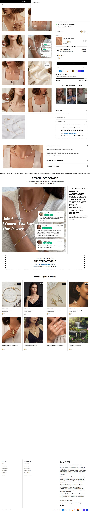

Fonte: coleção de best sellers.
Mediana do catálogo: $40.0 · faixa $30.0 a $80.0
| # | Produto | Preço |
|---|---|---|
| 1 | Pearl of Grace Necklace | $60.0 |
| 2 | Pearl of Grace Bracelet | $40.0 |
| 3 | Trust God Adjustable Ring | $40.0 |
| 4 | Classic Cross Necklace | $50.0 |
| 5 | The Grace in Balance Ring 2-Piece-Set | $40.0 |
| 6 | The Eternal Cross Necklace | $50.0 |
| 7 | The Crown and Cross Necklace | $50.0 |
| 8 | The Halo Stackable Rings | $30.0 |
| Criativos únicos (amostra de 50 mais recentes) | 7 |
| Fator de duplicação | 7.1x (mesmo criativo repetido) |
| Anúncios por dia | 3.2/dia · ~22.4/semana |
| Criativos únicos por semana | 3.1 |
| Janela da amostra | 15.71 dias |
| Headline |
|---|
| "Anniversary Sale 🤍 Buy 1 Get 1 Free" |
| "Grab the Perfect Gift for her in the Easter/Valentines/Spring Sale 🤍" |
O que faz o campeão vender, decodificado dos criativos e da PDP: é isto que se copia, não o número de anúncios.
| Big idea / ângulo | O presente perfeito para ela nesta ocasião. |
| Mecanismo único | Ancoragem numa ocasião datada (Páscoa, Namorados, Primavera, Aniversário). A data cria urgência real e justifica a compra como presente. |
| Formato de hook | "Grab the Perfect Gift for her in the [Easter] Sale 🤍" + "Buy 1 Get 1 Free". |
| Estrutura do presell | Template sazonal trocado a cada ocasião do calendário, com BOGO para empurrar a decisão antes da data. |
| Objeção principal | "Chega a tempo? Vale o preço?" Respondida com urgência de sale + BOGO (leva dois, um de presente). |
Contagem tirada do JSON-LD da própria loja (widget loox), não de terceiro. Amostra dos produtos, é piso e não o total.
| Produto amostrado | Reviews | Nota |
|---|---|---|
| pearl-of-grace-necklace | 169 | 4.8 |
| pearl-of-grace-bracelet | 28 | 4.9 |
| trust-god-adjustable-ring | 2 | 5.0 |
Transparência sobre os limites desta ficha. Cada linha mostra o que faltou, por quê, e o que foi tentado.
| Dado | Motivo | Método tentado |
|---|---|---|
| Visitas mensais (SimilarWeb) | domínio abaixo do limiar de medição do SimilarWeb | Navegador real (Playwright) com pausas longas. Operações pequenas e recentes não entram no SimilarWeb; o Tranco confirma tráfego abaixo do limiar. Impacto: faturamento estimado só por proxy de anúncios. |
| Pixel ID da Meta | não encontrado no HTML da home | Regex no HTML. O pixel é carregado via GTM ou via Customer Events do Shopify, que não expõe o ID no fonte. |
| Eixo | Pontos | Por quê |
|---|---|---|
| Sourcing simples | 2/2 | catálogo de 16 produtos |
| Ticket fecha sem escada | 1/2 | BOGO sazonal |
| Criativo simples de produzir | 2/2 | template sazonal estático |
| Mecanismo com urgência | 2/2 | presente + ocasião (data) |
| Investimento de entrada baixo | 2/2 | ticket médio, catálogo mínimo |
| Sem dependência de autoridade | 2/2 | vende presente, sem marca |
Nível é etiqueta de "pra quem serve", não nota de corte: 10-12 iniciante, 6-9 médio, 0-5 avançado. Toda oportunidade de dropshipping vale, muda só o perfil de operador.
E a loja que mais explicitamente faz o cruzamento FE + PRESENTE: "Perfect Gift for her" ancorado numa ocasiao (Pascoa, Namorados, Primavera, Aniversario). Todos os criativos sao variacoes sazonais do mesmo template, o que explica a sobrevivencia baixa (22%): troca a ocasiao, mata o criativo velho. Catalogo minusculo (16 produtos) com o maior ticket de produto campeao do grupo ($60).